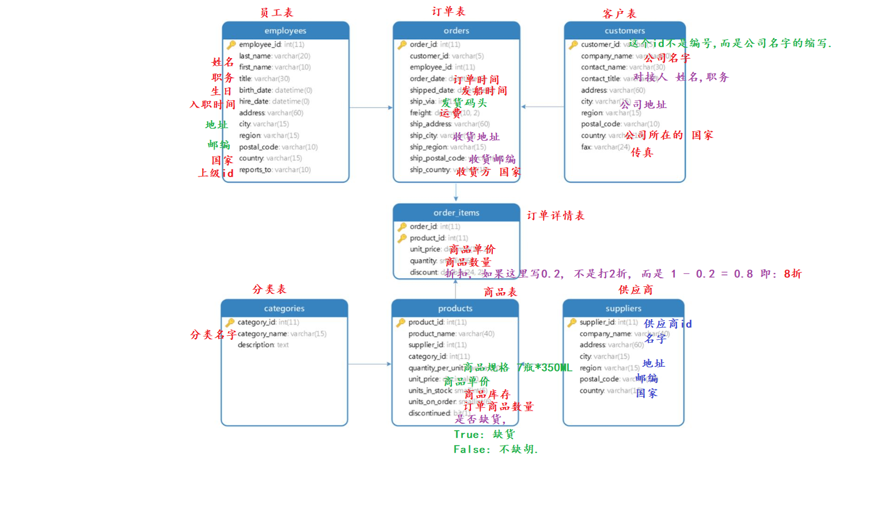

本套练习使用微软经典的北风（Northwind）贸易公司数据集：一家食品贸易公司的订单业务数据，共 7 张表。34 道题从单表查询一路练到多表连接、分组聚合和 CASE WHEN 报表，是 MySQL 两讲内容的综合实战。配套讲义：《MySQL 基础》《MySQL 查询》。
准备动作：建库并导入资料包中的北风数据源 SQL 文件：
create database north_wind; use north_wind; -- 用 DataGrip 执行资料包中的"源数据"SQL 文件导入数据, 然后: show tables;
表结构总览（7 张表，行数：categories 8 / customers 91 / employees 10 / order_items 2155 / orders 830 / products 77 / suppliers 29）：

| 表 | 说明 | 关键字段 |
|---|---|---|
| customers 客户 | customer_id 是公司名缩写而非数字 | company_name、contact_name、city、country、fax |
| employees 员工 | 处理订单的员工 | first_name、last_name、title、birth_date、hire_date、region |
| orders 订单 | 一单一行 | customer_id、employee_id、order_date、shipped_date、freight 运费、ship_country |
| order_items 订单详情 | 一单多行（每商品一行） | order_id、product_id、unit_price、quantity、discount（0.2 表示 8 折） |
| products 商品 | product_name、supplier_id、category_id、unit_price、units_in_stock 库存 | |
| categories 分类 | 8 个商品类别 | category_name |
| suppliers 供应商 | company_name、country |
原练习题的需求编号从 9 直接跳到 11（没有需求 10），此处保留原编号方便对照。
一、基础查询（需求 1~3）
需求 1：选中 employees 表的所有数据
select * from employees;
共 10 名员工。
需求 2：查询每个客户的 ID、company name、contact name、contact title、city 和 country，并按照国家名字排序
select customer_id, company_name, contact_name, contact_title, city, country from customers order by country;
91 个客户，排序后第一批是 Argentina（阿根廷）的客户。
需求 3：查询每一个商品的 product_name、category_name、quantity_per_unit、unit_price、units_in_stock，并通过 unit_price 排序（分别用显式内连接和隐式内连接实现）
-- 方式1: 显式内连接(推荐) select p.product_name, c.category_name, p.quantity_per_unit, p.unit_price, p.units_in_stock from products p join categories c on p.category_id = c.category_id order by p.unit_price; -- 方式2: 隐式内连接 select p.product_name, c.category_name, p.quantity_per_unit, p.unit_price, p.units_in_stock from products p, categories c where p.category_id = c.category_id order by p.unit_price;
77 件商品，最便宜的是 Geitost（2.50）。
二、多表连接（需求 4~8）
需求 4：列出所有提供了 4 种以上不同商品的供应商列表，所需字段：supplier_id、company_name、products_count（提供的商品种类数量）
select s.supplier_id, s.company_name, count(p.product_id) as products_count from suppliers s join products p on s.supplier_id = p.supplier_id group by s.supplier_id, s.company_name having products_count > 4;
严格按"多于 4 种"（>4）共 3 家：Pavlova, Ltd.（5）、Plutzer Lebensmittelgroßmärkte AG（5）、Bigfoot Breweries（6）。若把"4 种以上"理解为含 4（>=4），则共 5 家。
需求 5：提取订单编号为 10250 的订单详情，显示 product_name、quantity、unit_price（order_items 表）、discount、order_date，按商品名字排序
select p.product_name, oi.quantity, oi.unit_price, oi.discount, o.order_date from order_items oi join products p on oi.product_id = p.product_id join orders o on oi.order_id = o.order_id where oi.order_id = 10250 order by p.product_name;
3 行结果：Jack's New England Clam Chowder、Louisiana Fiery Hot Pepper Sauce、Manjimup Dried Apples，下单日期均为 2016-07-08。
需求 6：收集运输到法国的订单的相关信息，包括订单涉及的顾客和员工信息、下单和发货日期等
select o.order_id, c.company_name as customer_company, c.contact_name, e.first_name, e.last_name, o.order_date, o.shipped_date, o.ship_city, o.ship_country from orders o join customers c on o.customer_id = c.customer_id join employees e on o.employee_id = e.employee_id where o.ship_country = 'France';
共 73 个运往法国的订单。
需求 7：提供订单编号为 10248 的相关信息，包括 product_name、unit_price（order_items 表中）、quantity、company_name（供应商公司名字，起别名 supplier_name）
select p.product_name, oi.unit_price, oi.quantity, s.company_name as supplier_name from order_items oi join products p on oi.product_id = p.product_id join suppliers s on p.supplier_id = s.supplier_id where oi.order_id = 10248;
3 行：Queso Cabrales、Singaporean Hokkien Fried Mee、Mozzarella di Giovanni 及各自供应商。
需求 8：提取每件商品的详细信息：product_name、供应商公司名称 company_name（suppliers 表）、category_name、unit_price、quantity_per_unit
select p.product_name, s.company_name, c.category_name, p.unit_price, p.quantity_per_unit from products p join suppliers s on p.supplier_id = s.supplier_id join categories c on p.category_id = c.category_id;
三表连接，77 行（每件商品一行）。
三、聚合与分组统计（需求 9~18）
需求 9：统计 2016 年 7 月的订单数量
select count(*) as order_cnt from orders where order_date >= '2016-07-01' and order_date < '2016-08-01'; -- 等价写法: 用日期函数 select count(*) as order_cnt from orders where year(order_date) = 2016 and month(order_date) = 7;
22 单。范围写法（>= 且 <）比函数写法更能利用索引，推荐。
需求 11：统计每个供应商供应的商品种类数量，返回 supplier_id、company_name、products_count（使用 products 和 suppliers 表）
select s.supplier_id, s.company_name, count(p.product_id) as products_count from suppliers s join products p on s.supplier_id = p.supplier_id group by s.supplier_id, s.company_name;
28 行（29 家供应商中有 1 家没有在售商品，内连接被过滤；如需保留可改 left join）。
需求 12：查找 ID 为 10250 的订单的总价（折扣前），SUM(unit_price * quantity)
select sum(unit_price * quantity) as total_price from order_items where order_id = 10250;
1813.00。
需求 13：统计每个员工处理的订单总数，结果包含 employee_id、first_name、last_name、orders_count
select e.employee_id, e.first_name, e.last_name, count(o.order_id) as orders_count from employees e join orders o on e.employee_id = o.employee_id group by e.employee_id, e.first_name, e.last_name;
订单最多的是 4 号员工 Margaret Peacock（155 单），最少的是 10 号（1 单）。
需求 14：统计每个类别中的库存产品值多少钱？显示 category_id、category_name、category_total_value（计算方式：SUM(unit_price * units_in_stock)）
select c.category_id, c.category_name, sum(p.unit_price * p.units_in_stock) as category_total_value from categories c join products p on c.category_id = p.category_id group by c.category_id, c.category_name;
8 个类别中库存价值最高的是 Seafood（13010.35），最低的是 Produce（3549.35）。
需求 15：计算每个员工的订单数量
select employee_id, count(*) as orders_count from orders group by employee_id;
单表分组即可（与需求 13 的区别：不需要员工姓名就不必连表）。
需求 16：计算每个客户的下订单数，结果包含 customer_id、company_name、orders_count
select c.customer_id, c.company_name, count(o.order_id) as orders_count from customers c join orders o on c.customer_id = o.customer_id group by c.customer_id, c.company_name;
85 行——91 个客户中有 6 个从未下单（内连接被过滤）。若要求"没下过单的客户显示 0"，改用 left join（count(o.order_id) 对 NULL 不计数，正好得 0）。
需求 17：统计 2016 年 6 月到 7 月用户的总下单金额（折后实付）并按金额从高到低排序，结果包含 company_name 和 total_paid
select c.company_name, round(sum(oi.unit_price * oi.quantity * (1 - oi.discount)), 2) as total_paid from customers c join orders o on c.customer_id = o.customer_id join order_items oi on o.order_id = oi.order_id where o.order_date >= '2016-06-01' and o.order_date < '2016-08-01' group by c.company_name order by total_paid desc;
20 个客户有消费，前三名：Suprêmes délices（3597.90）、Frankenversand（3536.60）、Ernst Handel（3488.68）。
需求 18：统计客户总数和带有传真号码的客户数量，字段：all_customers_count 和 customers_with_fax_count
select count(*) as all_customers_count, count(fax) as customers_with_fax_count from customers;
91 / 69。原理：count(*) 统计所有行，count(列) 只统计该列非 NULL 的行——正是上一讲 count 面试题的实际应用。
四、CASE WHEN 报表（需求 19~26）
需求 19：报表显示每种产品的库存水平：库存大于 100 为 high，50~100 为 moderate，小于 50 为 low，零库存为 none
select product_name, units_in_stock, case when units_in_stock = 0 then 'none' when units_in_stock > 100 then 'high' when units_in_stock >= 50 then 'moderate' else 'low' end as availability from products;
注意 = 0 的分支必须放在最前（否则会被 else 'low' 抢走）。分布：high 10、moderate 13、low 49、none 5。
需求 20：统计员工的经验水平，显示 first_name、last_name、hire_date、experience（2014-01-01 以后 junior；2013-01-01 之后至 2014-01-01 之前 middle；2013-01-01 或之前 senior）
select first_name, last_name, hire_date, case when hire_date >= '2014-01-01' then 'junior' when hire_date > '2013-01-01' then 'middle' else 'senior' end as experience from employees;
10 名员工：senior 3 人、middle 3 人、junior 4 人。CASE WHEN 从上往下短路匹配，边界只需在前面的分支写清楚。
需求 21：北美地区（美国、加拿大）包裹免运费。查询订单编号 10720~10730 活动后的运费价格
select order_id, ship_country, freight, case when ship_country in ('USA', 'Canada') then 0 else freight end as new_freight from orders where order_id between 10720 and 10730;
11 个订单中 10722、10723（USA）和 10724（Canada）的运费变为 0，其余不变。
需求 22：创建客户基本信息报表：customer_id、company_name、country、language（Germany/Switzerland/Austria 为 'German'；UK/Canada/USA/Ireland 为 'English'；其他为 'Other'）
select customer_id, company_name, country, case when country in ('Germany', 'Switzerland', 'Austria') then 'German' when country in ('UK', 'Canada', 'USA', 'Ireland') then 'English' else 'Other' end as language from customers;
需求 23：将所有产品划分为素食和非素食两类，字段：product_name、category_name、diet_type（类别为 'Meat/Poultry' 和 'Seafood' 的为 'Non-vegetarian'，其余为 'Vegetarian'）
select p.product_name, c.category_name, case when c.category_name in ('Meat/Poultry', 'Seafood') then 'Non-vegetarian' else 'Vegetarian' end as diet_type from products p join categories c on p.category_id = c.category_id;
需求 24：统计运送到北美地区和其它国家地区的订单数量（促销策略同需求 21）
select sum(case when ship_country in ('USA', 'Canada') then 1 else 0 end) as orders_north_america, sum(case when ship_country not in ('USA', 'Canada') then 1 else 0 end) as orders_other from orders;
152 / 678。sum(case when 条件 then 1 else 0 end) 是"按条件分别计数"的万能套路，本节后面反复用到。
需求 25：统计供应商来自哪个大洲，字段：supplier_continent（USA/Canada 为 'North America'；Japan/Singapore 为 'Asia'；其它 'Other'）和供应产品种类数量 product_count
select case when s.country in ('USA', 'Canada') then 'North America' when s.country in ('Japan', 'Singapore') then 'Asia' else 'Other' end as supplier_continent, count(p.product_id) as product_count from suppliers s join products p on s.supplier_id = p.supplier_id group by supplier_continent;
North America 19、Asia 9、Other 49。这里是按 CASE 表达式的结果分组——先打标签再分组。
需求 26：统计员工的年龄情况，字段：age（生日大于 1980-01-01 为 'young'，其余 'old'）和 employee_count
select case when birth_date > '1980-01-01' then 'young' else 'old' end as age, count(*) as employee_count from employees group by age;
young 5 人、old 5 人。
五、条件统计进阶（需求 27~34）
需求 27：统计客户 contact_title 字段值为 'Owner' 的客户数量，结果字段：represented_by_owner 和 not_represented_by_owner
select sum(case when contact_title = 'Owner' then 1 else 0 end) as represented_by_owner, sum(case when contact_title != 'Owner' then 1 else 0 end) as not_represented_by_owner from customers;
17 / 74。若数据中 contact_title 可能为 NULL，第二个条件要写成 contact_title != 'Owner' or contact_title is null（NULL 参与比较结果不为真，会被漏掉）。
需求 28：统计有多少订单由华盛顿（WA）地区的员工处理、多少由其它地区员工处理，字段：orders_wa_employees 和 orders_not_wa_employees
select sum(case when e.region = 'WA' then 1 else 0 end) as orders_wa_employees, sum(case when e.region != 'WA' or e.region is null then 1 else 0 end) as orders_not_wa_employees from orders o join employees e on o.employee_id = e.employee_id;
605 / 225。注意员工表的 region 存在非 WA 的取值（本数据集中是字符串 'null'），带上 is null 分支的写法对真正的 NULL 也稳健。
需求 29：统计不同类别产品的库存量，按库存 >30 和 <=30 两档分别统计商品数量，字段：category_name、high_availability、low_availability
select c.category_name, sum(case when p.units_in_stock > 30 then 1 else 0 end) as high_availability, sum(case when p.units_in_stock <= 30 then 1 else 0 end) as low_availability from categories c join products p on c.category_id = p.category_id group by c.category_name;
例如 Seafood 8 / 4，Confections 5 / 8——分组 + 条件计数的组合，相当于把 CASE WHEN 套进 GROUP BY 的每个组里。
需求 30：统计运输到法国的订单中，打折和未打折订单明细的总数量，字段：full_price（原价）和 discounted_price（打折）
select sum(case when oi.discount = 0 then 1 else 0 end) as full_price, sum(case when oi.discount > 0 then 1 else 0 end) as discounted_price from orders o join order_items oi on o.order_id = oi.order_id where o.ship_country = 'France';
107 / 77（合计 184 行，与题目提示一致）。
需求 31：统计不同供应商供应商品的总库存量，以及高价值商品（单价超过 40）的库存量，字段：supplier_id、company_name、all_units、expensive_units
select s.supplier_id, s.company_name, sum(p.units_in_stock) as all_units, sum(case when p.unit_price > 40 then p.units_in_stock else 0 end) as expensive_units from suppliers s join products p on s.supplier_id = p.supplier_id group by s.supplier_id, s.company_name;
case when 里返回的不是 1 而是 units_in_stock——条件求和（而不只是条件计数）。
需求 32：为每种商品添加价格标签，字段：product_id、product_name、unit_price、price_level（单价高于 100 为 'expensive'；高于 40 但不超过 100 为 'average'；其他 'cheap'）
select product_id, product_name, unit_price, case when unit_price > 100 then 'expensive' when unit_price > 40 then 'average' else 'cheap' end as price_level from products;
分布：expensive 2、average 10、cheap 65。
需求 33：统计所有订单的总价（不计折扣）并分类，字段：order_id、total_price、price_group（超过 2000 为 'high'；600~2000 含两端为 'average'；低于 600 为 'low'）
select order_id, sum(unit_price * quantity) as total_price, case when sum(unit_price * quantity) > 2000 then 'high' when sum(unit_price * quantity) >= 600 then 'average' else 'low' end as price_group from order_items group by order_id;
830 个订单：high 211、average 355、low 264。注意 CASE 用在聚合结果上——它在 GROUP BY 聚合之后执行，所以里面可以放 sum()。
需求 34：统计所有订单的运费档位数量：low_freight（freight < 40）、avg_freight（40 <= freight < 80）、high_freight（freight >= 80）
select sum(case when freight < 40 then 1 else 0 end) as low_freight, sum(case when freight >= 40 and freight < 80 then 1 else 0 end) as avg_freight, sum(case when freight >= 80 then 1 else 0 end) as high_freight from orders;
411 / 183 / 236。至此把"行转列式条件统计"的三个层次都练到了：条件计数（then 1）、条件求和（then 列）、聚合后再分档（case 套 sum）。